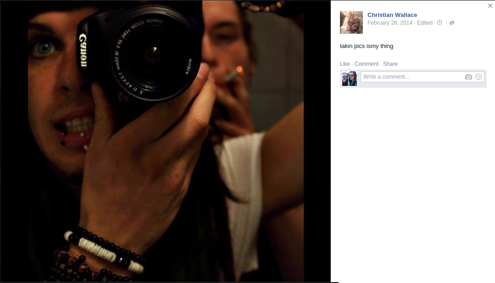
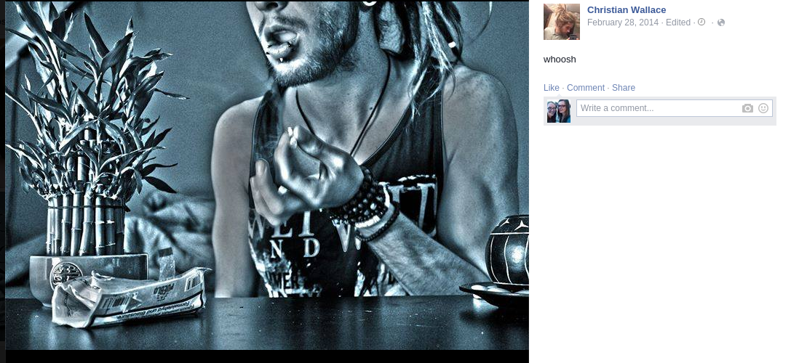
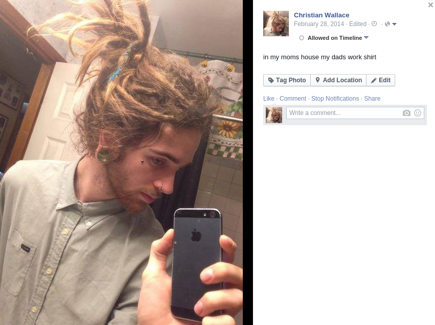
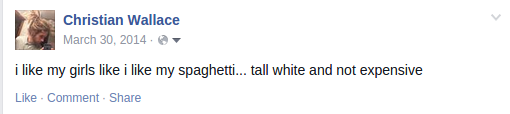
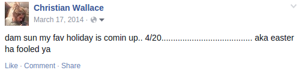
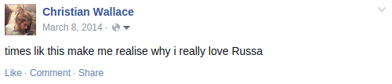
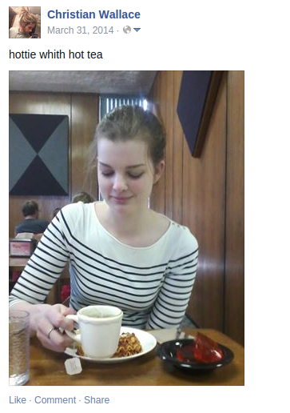
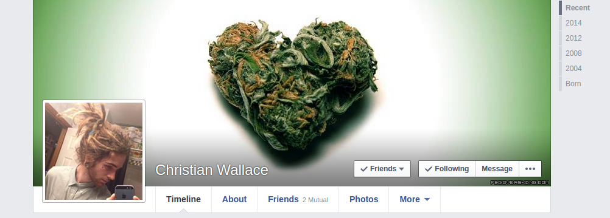

April Fool's day has always been one of my favorite holidays. Growing up, I'd play small pranks on my family, such as feeding one of my brothers frozen cereal or salty water disguised as lemonade. Two years ago, I put a fake search warrant in my roommate's mailbox saying our dorm room was getting searched for drugs, even though neither of us does drugs. Another one of my friends got a notice that she was going to juvenile detention, and panicked until she remembered she was 19 and not even a minor anymore.
Last year, I was determined to outdo myself. Months ahead of time, I decided to convince my parents that I had a new boyfriend who they would definitely not approve of. I created a fake Facbeook profile with the name Christian Wallace. I carefully selected a name that sounds nice and unassuming, so at first my parents would think, "Oh, Christian Wallace, he sounds nice."
Next, I filled out his profile and made him a scientologist. I found a bunch of images on the internet of different guys with dreadlocks, tattoos, and facial piercings, then selected photos that looked similar to each other, even though they were of different guys. The images depicted drug use, many tattoos, and the captions had bad grammar and spelling mistakes. His cover photo was a weed nugget in the shape of a heart.



Now that Christian Wallace's profile was complete, I had to add a bunch of friends so he would look legitimate. I friend requested random people, and to my surprise, many of them accepted. I especially targeted people with the last name of Wallace so it would look like his family had added him too. Even a few of my friends added him so my parents would think we were really dating.
All that was left to do was log in every once in a while and post statuses. I made sure the statuses were unintelligent with plenty of spelling and grammar mistakes. A few days before April Fool's day, he posted a photo of me drinking tea with the caption "Hottie with hot tea." This would be the first thing to show up on his profile when I told my parents to look at my new boyfriend's Facebook profile.



Finally, April Fool's day rolled around. During the afternoon, I texted my mom and dad: "Hey, go on my Facebook profile and look up Christian Wallace. That's who I've been dating lately." Normally my mom responds to text message pretty quickly, but this time she took over an hour to reply: "Umm..... I don't know what to say." So I told her it was an April Fool's joke and she was extremely relieved. She had her suspicions it was a joke, but the profile looked so realistic and she didn't want to hurt my feelings by asking me if it was an April Fool's prank in case I was actually dating this guy. She agreed to ask my dad about my new boyfriend and be in on the joke.
My dad had been working all day long so he didn't have a chance to look up Christian Wallace, or even think about the fact that it was April Fool's day. When he got home late at night, my mom asked him if he had seen my new boyfriend. My dad said, "No, what's he like?" My mom was trying to keep a serious face so she acted disgusted and said, "Ponytail." My dad also acted disgusted. (I still think it's funny that out of all the things about Christian Wallace, my mom mentioned his ponytail...) My mom brought out the laptop to show my dad. After looking through a few pictures, my dad asked, "Does he ever wash his hair?" At that point my mom couldn't help but to laugh and say it was an April Fool's day prank.
My parents had hinted that they were going to eventually get me back for this joke, but April Fool's day came and went with nothing this year. I had some plans for another prank in the making, but I lost my wallet over Spring Break so I was too busy straightening out everything this year to go through with it. Maybe next year I'll be able to write an even better blog post about my next prank!
Questions? Comments? Don't hesitate to contact me!